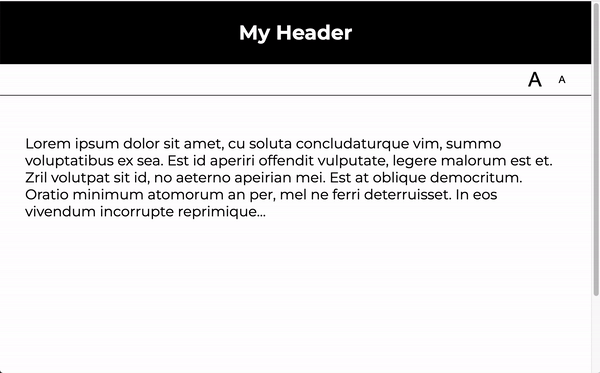
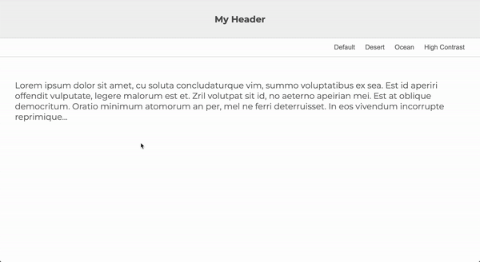
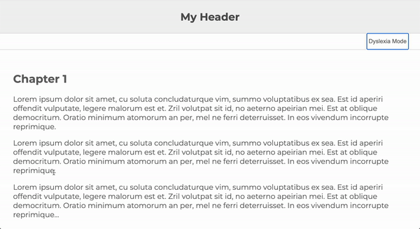

Assignments > Tutorial 7: DOM manipulation
Due on Fri, 03/24 @ 11:59PM. 6 Points.
Readings / References
Introduction
The goal of today’s tutorial is to:
- Help you practice using JavaScript to target and modify HTML elements in your DOM Tree.
- Continue practicing your CSS skills.
- Encourage you to keep thinking about improving the accessibility of your website.
Cheatsheet
I have created a cheatsheet (below) with examples of different selector methods and approaches to updating the DOM.
Selector Methods
| Method | Example |
|---|---|
| getElementById() | document.getElementById(“my_element”) |
| querySelector() | document.querySelector(“#my_element”) document.querySelector(“p”) document.querySelector(“.my-announcements”) |
| querySelectorAll() | document.querySelectorAll(“p”) |
| getElementsByTagName() | document.getElementsByTagName(“div”) |
| getElementsByClassName() | document.getElementsByClassName(“.panel”) |
Some examples of HTML attributes you can modify
| Attribute | Example |
|---|---|
| className | document.querySelector(“div”).className = “panel”; |
| innerHTML | document.querySelector(“div”).innerHTML = “<p>hi</p>”; |
| src (for images) | document.querySelector(“.my_image”).src = “sponge_bob.png”; |
| href (for links) | document.querySelector(“.my_link”).href = ‘https://www.wikipedia.org’; |
Some examples of style properties you can modify
| Property | Example |
|---|---|
| width | document.querySelector(“div”).style.width = “200px”; |
| height | document.querySelector(“div”).style.width = “200px”; |
| background-color | document.querySelector(“div”).style.backgroundColor = “hotpink”; |
| border-width | document.querySelector(“div”).style.borderWidth = “5px”; |
| padding | document.querySelector(“div”).style.padding = “10px”; |
| display | document.querySelector(“div”).style.display = “none”; |
Your Tasks
Please download the tutorial07.zip file, unzip it, and move the tutorials folder inside of your csci185 folder. Then complete the tasks below.
1. Font Size Adjuster
Open font-switcher/index.html in VS Code, and note the HTML tags. Also note that within the header tag there is a script tag that links to your JavaScript file:
<script src="index.js" defer></script>
The keyword defer means that the script won’t run until your
entire web page is loaded.
Open 01-font-switcher/index.html:
- Attach the
makeBigger()event handler to the#biggerbutton. - Attach the
makeSmaller()event handler to the#smallerbutton.
See the Lecture 9 and Lecture 10 exercise files if you need to see some examples of how you might do this.
Next, open 01-font-switcher/index.js and, modify the body of the
makeBigger and makeSmaller
functions so that they update the font size of the div.content
element and the h1 element. There should be at least two
statements within the body of each function (one to target and manipulate div.content, and one to target and manipulate h1). When you’re done, your web page should look like this:

2. Theme Switcher
Another way to make your site more accessible is to create a “high-contrast” stylesheet or CSS class. For this exercise, please do the following:
- Open
02-theme-switcher/index.jsand attach a click event handler to each of the four of the buttons in the nav bar. - Each event handler should modify the class of the
bodytag to match the theme of the button that was clicked (just like we did in class for Lecture 10).- The available theme classes are:
ocean,desertandhigh-contrast. To see the themes, open thestyle.cssfile and scroll to the bottom.
- The available theme classes are:
- If the
defaultbutton is clicked, just unset the class on the body tag. - [Optional] If you have time, try creating your own theme in the
../style.cssfile and creating another button so that when you click on the new button, your theme shows up.
When you’re done, your web page should look like this:

3. Dyslexia Mode (Recommended, but Optional)
In part 3, you will use JavaScript to create a method for people with dyslexia to more easily read your web page. This technique is based on this artice: Adding A Dyslexia-Friendly Mode To A Website. Please complete the following tasks:
- In
style.css, create a new class called.dyslexia-mode. - Following the recommendations from the Smashing Magazine article above, ensure that your class does
the following:
- Adjust the letter and word spacing to the recommended settings
- Disables ligatures
- Modify the line spacing
- Modify either the font weight (to be bolder) or the color (to be darker)
- Make the font-size bigger
- Narrow the line width (lines that are too long in the horizontal direction are hard to read)
- When you’re done, create a button and add the needed functionality to enabled the user to toggle the “Dyslexia Mode” on and off.
- Note that the Smashing Magazine also makes use of localStorage so that the site “remembers” the users’ preferences for the next time.
When you’re done, your web page should look like this:

Update your homepage to link to your tutorial06
Please update your homepage (the index.html page you made in Tutorial 3) so that it links to your
completed Tutorial 6 web pages.
Checklist
Please make sure that you have completed the following:
- Implemented the font size adjuster
- Implemented the theme switcher
- Implemented “dyslexia mode” (optional, but recommended)
- Your homepage links to your completed “font size adjuster” and “theme switcher” pages.
- Everything committed to GitHub (stage, commit, and sync).
What to Submit
Please Read Carefully: To submit Tutorial 6, please paste the following links into the Moodle under the Tutorial 6 submission section:
- A link to your homepage on GitHub pages, which should link to the “font size
adjuster” and “theme switcher” tasks you completed (using relative paths).
- Note that your homepage should also link to previous tutorials and classwork you have done.
- A link to your GitHub code repository (where your code files are stored).